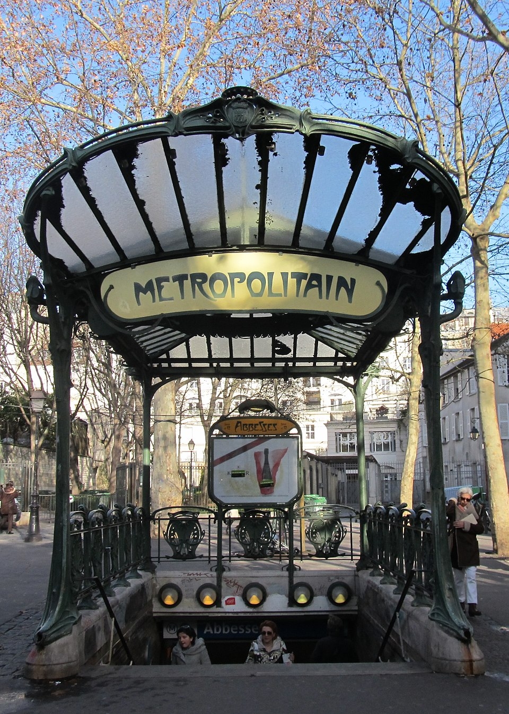
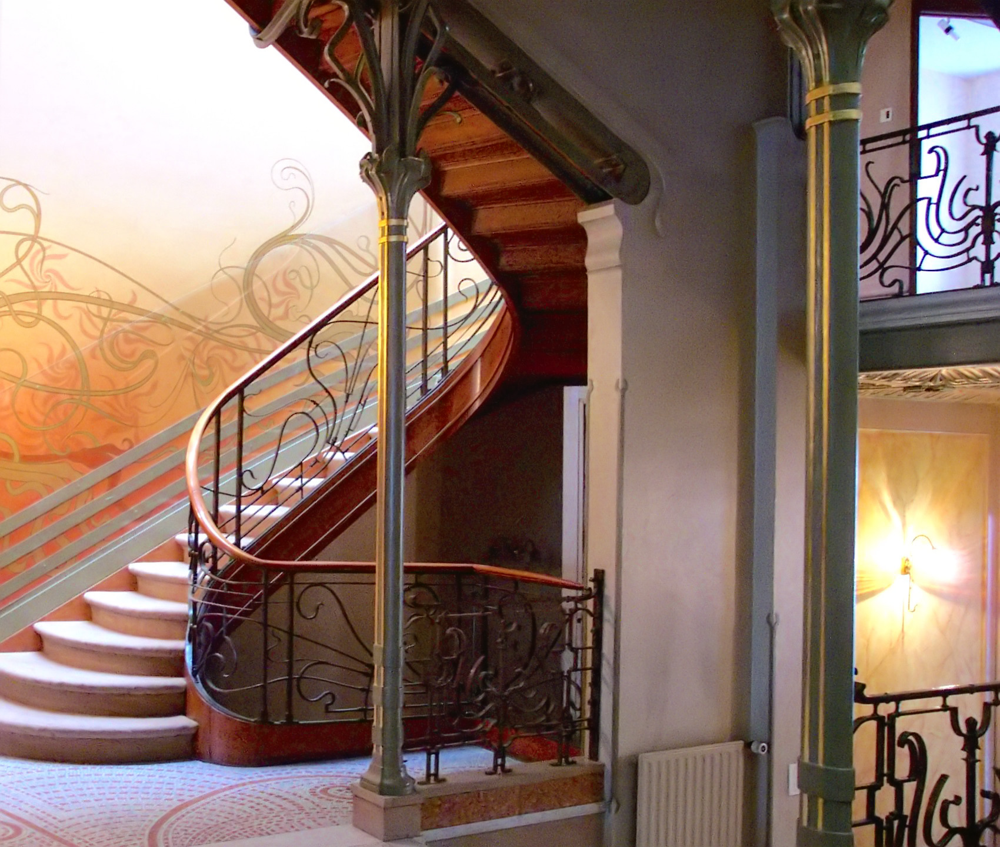
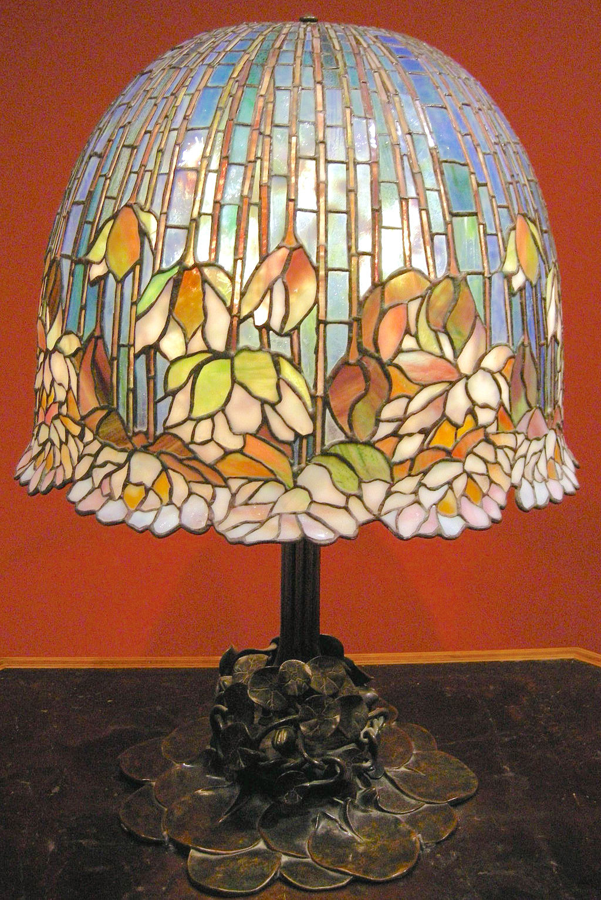
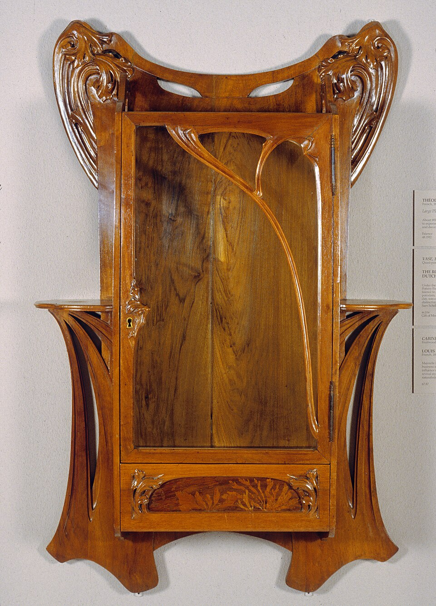
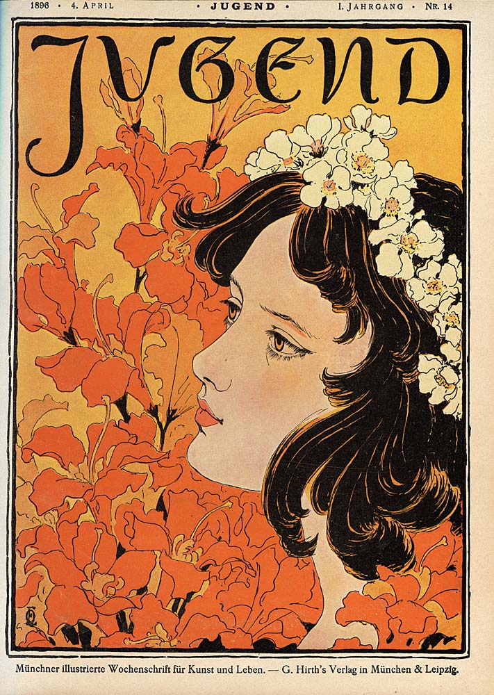

The World That Made Art Nouveau

Fin de Siècle
Art Nouveau emerged during the Belle Époque (c. 1871–1914), a period of relative prosperity shot through with anxiety about rapid change. Cities were expanding at disorienting speed. Electric light, telephones, automobiles, and cinema were transforming daily life. There was a widespread sense that an old world was dissolving.
Two impulses competed: a retreat toward handcraft (Arts & Crafts) and an embrace of modernity that refused to be ugly. Art Nouveau chose the second path — accepting new materials and industrial techniques while insisting they could produce beauty by inventing new forms, not copying old ones.
Defining Characteristics
The whiplash line: a sinuous, asymmetric, organic curve appearing in iron, glass, wood, and print. Natural motifs: lilies, irises, dragonflies, peacocks, flowing water, the female form rendered with botanical fluidity. Gesamtkunstwerk: the total work of art — architects designed everything from the building to the door handles. Expressive materials: wrought iron bent into tendrils, glass layered and chemically treated, ceramic tile flowing across facades.
Art Nouveau embraced new industrial materials but insisted they produce beauty, not just function. Where do you see contemporary designers using new technologies (3D printing, parametric design, AI) to create beauty rather than just efficiency?
Image Gallery




Look at the range of media represented here: architecture, glass, furniture, graphic design. What visual elements connect these works across such different materials and scales? Can you identify the "whiplash line" in each?
The People of Art Nouveau
Defined Art Nouveau's graphic language with his theatrical posters for Sarah Bernhardt. His "Mucha style" — idealized female figures, cascading hair, ornamental borders, muted pastels with gold — became synonymous with the era.
His Hôtel Tassel (1893) is widely considered the first Art Nouveau building. Pioneered exposed iron as organic decoration, open floor plans, and total interior design — four of his Brussels townhouses are UNESCO World Heritage Sites.
Pushed architecture into almost biological territory — his buildings seem to grow rather than be built. Used trencadís mosaic, parabolic arches, and nature-derived structural systems. Worked exclusively on the Sagrada Família from 1914 until his death.
Brought Art Nouveau to the Paris streets with his iconic cast-iron Métro entrances (1900–1913). Parisians called the style "le style Guimard." Only 86 of the original 167 survive as protected monuments.
Co-founded the Vienna Secession in 1897. Fused figurative naturalism with flat, ornamental gold surfaces inspired by Byzantine mosaics. His work bridges Art Nouveau's organic curves with the geometric abstraction of early modernism.
Developed Favrile glass using metallic oxides for iridescent surfaces. His stained-glass lamps used copper-foil technique for intricate organic designs — wisteria, dragonflies, water lilies in opalescent glass.
Developed a cooler, more geometric Art Nouveau. His Glasgow School of Art (1897–1909) combined spare rectilinear forms with subtle organic touches and Japanese-influenced spaces. Strongly influenced the Vienna Secessionists.
Leading figure of the École de Nancy. Developed glass marquetry (layered, acid-etched glass) and pâte de verre casting. His vases and lamps drew imagery from nature with an almost literary quality. Founded the École de Nancy in 1901.
Revolutionized jewelry by rejecting gem obsession in favor of design — using enamel, glass, horn, and unconventional imagery (dragonflies, serpents, orchids). Later pivoted to iconic perfume bottles for Coty and others.
Seven-year career cut short by tuberculosis at age 25, but enormously influential. Black-ink drawings combined Art Nouveau's line with darkness, eroticism, and grotesque wit. Influenced by Japanese woodcuts and the Decadent movement.
Regional Variations
Art Nouveau appeared almost simultaneously across Europe under different names. The same desire to create a modern style rooted in nature produced strikingly different results depending on local traditions, materials, and cultural politics.
Where it began. Horta's Hôtel Tassel (1893) launched the movement. Known for dramatic "whiplash" curves in iron, glass, and stone. Horta, van de Velde, and Paul Hankar all worked here.
Paris: Bing's gallery, Guimard's Métro, Mucha's posters, Lalique's jewelry. Nancy: the École de Nancy under Gallé and Majorelle — more botanically precise, reflecting craft traditions.
The Vienna Secession moved earlier toward geometric abstraction. Klimt, Hoffmann, Moser, Wagner favored rectilinear forms and checkerboard patterns. The Wiener Werkstätte (1903) forecast Art Deco and modernism.
Inseparable from Catalonia's drive for cultural distinctiveness. Gaudí, Domènech i Montaner — more ornamental, colorful, and structurally daring than Art Nouveau elsewhere. Trencadís mosaics, parabolic arches.
Mackintosh and "The Four" — vertical emphasis, geometric structure, pale austere palette. Influenced the Vienna Secessionists when Mackintosh exhibited there in 1900.
Named after the Munich magazine Jugend (1896). More structured and linear than French/Belgian variants. Peter Behrens began here before pioneering industrial design. The Darmstadt Artists' Colony (1899) was a key center.
Catalan Modernisme was inseparable from regional political identity. Can you identify contemporary design movements that are similarly tied to a specific place or cultural struggle?
Match the Artist to Their Work
Click an artist on the left, then click their work on the right. Correct matches will lock in place.
Match the Regional Name
Click a country on the left, then its Art Nouveau name on the right.